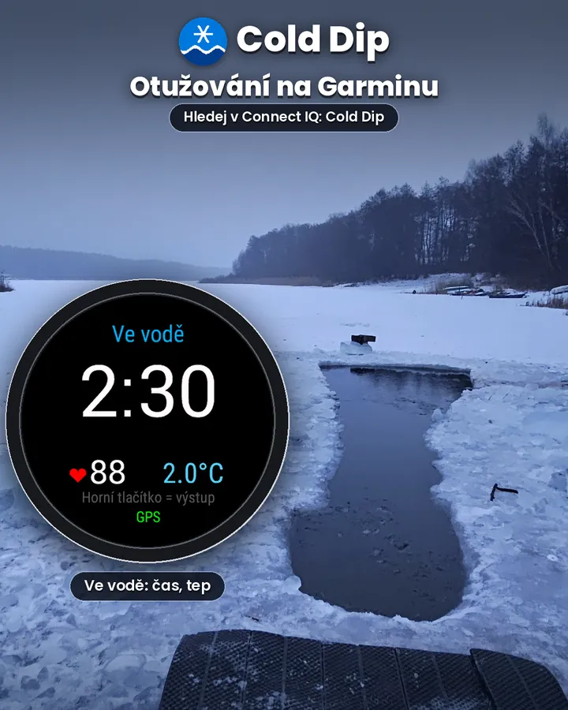
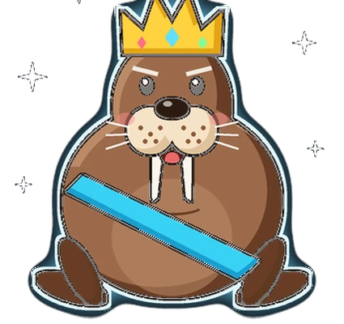
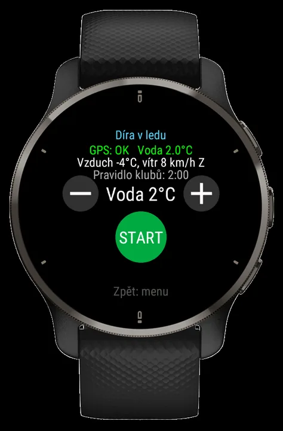
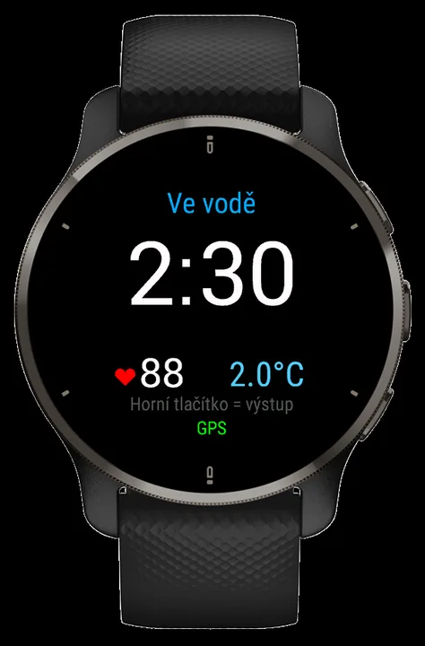
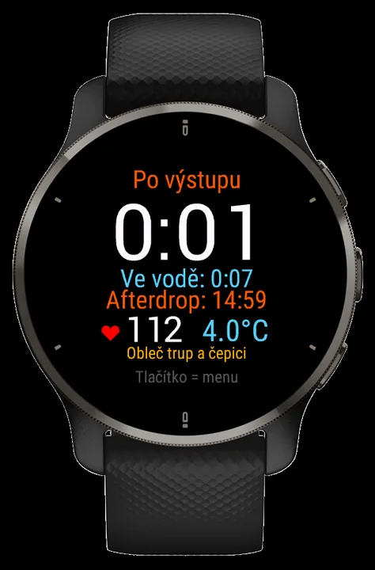

Před vstupem / ve vodě / po výstupu
Horní tlačítko přepíná fáze. Čas ve vodě prostě běží — aplikace vám nikdy neřekne, abyste vylezli. To je vaše rozhodnutí. Poslední čas je jen orientační hodnota, ne cíl, který musíte překonat.
Na hodinkách se aplikace jmenuje Otužování.
Otužování a zimní plavání zaznamenané pořádně — ne jako plavání.
5,0 v Connect IQ · 1000+ stažení
Nebo v aplikaci Connect IQ v telefonu vyhledejte „Cold Dip“.



Systémy
Aplikaci si teď můžete stáhnout na hodinky Garmin. Verze pro Amazfit (Zepp OS) je v recenzi v Zepp App Store. Verze pro Huawei, Wear OS a Apple Watch jsou v přípravě.
Dělaná pro otužování, ne pro bazén. Rozhodujete vy, po celou dobu.
Horní tlačítko přepíná fáze. Čas ve vodě prostě běží — aplikace vám nikdy neřekne, abyste vylezli. To je vaše rozhodnutí. Poslední čas je jen orientační hodnota, ne cíl, který musíte překonat.
Tep se zaznamenává po celou dobu. Teplotu vody zadáte ručně a uloží se k aktivitě.
Teplota vzduchu, pocitová teplota a vítr — z počasí Garmin v telefonu.
Místo vstupu se uloží a v Garmin Connect se zobrazí na mapě.
Po každém vstupu krátké hodnocení, jak se cítíte. Navíc špička a zotavení tepu a Body Battery a stres před vstupem.
Vše se v Garmin Connect uloží jako vlastní aktivita, ne jako plavání.
Angličtina, polština, němčina, čeština, slovenština, finština, norština, švédština, španělština, ruština a ukrajinština. Aplikace se automaticky přepne do jazyka hodinek.
Forerunner, Fenix, Epix, Enduro, Venu, Vivoactive, Instinct 2 / 3 / E / Crossover a další. Není podporována na velmi starých hodinkách, například Forerunner 920XT (Connect IQ 1.x).
Volitelné doplňky k bezplatné aplikaci — platíš jen tehdy, když je chceš
Aplikace, kterou už používáš, zůstává zdarma. Pro je pro ty, kdo chtějí ze sezóny víc: nové způsoby tréninku, jasnější přehled o pokroku a jednodušší obrazovku ve vodě.
4,99 USD jednorázově, plus DPH, pokud se uplatňuje · 7 dní zkušební verze zdarma
Vyzkoušej Pro 7 dní zdarma — potom 4,99 USD Aktualizovat v Connect IQ
Sauna s hodinkami na zápěstí, studená sprcha, vedený kontrast sauny a vody nebo krátká příprava dechem před vstupem. Změnu fáze vždy potvrdíš tlačítkem.
Pojmenované etapy a upozornění v časech, které si zvolíš, navíc k bezplatným alarmům po minutě, v polovině a 3-2-1, které zůstávají beze změny.
Celkový čas ve vodě a v sauně, další rekordy a historie až 200 sezení. Bezplatný seznam stále ukazuje posledních 30.
Udrž si sérii 7, 14 nebo 30 dní a získej odznaky za 10, 25, 50 a 100 sezení, první vstup pod 5°C, kontrastní sezení a saunu plus vodu v jednom sezení.
Velký timer, stránka tepu a kol a motivy (led, tmavý, vysoký kontrast, sauna). Stránku měníš tlačítky nahoru a dolů.
Jeden velký timer ve vodě, teplota vody a tep. Jedno tlačítko pro start a stop. Bez dalších menu a obrazovek. Zapneš ho v nastavení po odemčení Pro.
Navržený čas podle teploty vody, podle běžného klubového pravidla (zhruba tolik minut, kolik je °C, od 0:30 do 5:00). Je to jen tip: aplikace nikdy neukončí sezení a nikdy netvrdí, že je čas bezpečný.
Na novějších hodinkách můžete připnout náhled a komplikace: denní sérii, čas posledního vstupu a minuty sezony. Náhled je tam zdarma. Komplikace vyžadují ciferník, který umí komplikace aplikací.
Po uložení vstupu jednoduchá karta ukáže čas, teplotu, pocit a sérii. Vyfoťte obrazovku a můžete ji sdílet. Seznam historie zůstává v hodinkách a Garmin Connect dál dostane aktivitu FIT. Žádný cloudový export ani obrázek na Instagram — Connect IQ sám fotky neodešle.
Po vstupu uvidíte jednoduchý graf tepu, vrchol a hodnoty regenerace po 1 a 2 minutách. Je to jen tip, ne lékařská rada.
Uložte místo vstupu s poslední teplotou vody, kterou jste tam zaznamenali. Když budete poblíž, úvodní obrazovka může tuto návštěvu ukázat. Není to živá teplota jezera — Connect IQ takové API nemá.
Pokud hodinky necháváte venku, aby se nepřehřály, zapněte možnost: aplikace v sauně nebude čekat tep ze zápěstí a poté může spustit fázi zahřívání. Zahřívání můžete spustit i po vodě z nabídky.
| Co je v sadě | Zdarma | Pro ⭐ PRO |
|---|---|---|
| Vše, co už je v Cold Dip 1.0.3 — čtyři profily, historie 30 sezení, rekordy, řízené dýchání, GPS a další | ✓ Ano | ✓ Ano |
| Sauna, kontrast a nové režimy ⭐ PRO | — | ✓ Ano |
| Vlastní alarmy ve vodě ⭐ PRO | — | ✓ Ano |
| Celá sezóna na jednom místě ⭐ PRO | — | ✓ Ano |
| Odznaky a denní série ⭐ PRO | — | ✓ Ano |
| Další obrazovky a barevné motivy ⭐ PRO | — | ✓ Ano |
| Jednoduchý režim, pohodlný v rukavicích ⭐ PRO | — | ✓ Ano |
| Tip na čas — ne limit ⭐ PRO | — | ✓ Ano |
| Náhled a komplikace ciferníku (novější hodinky) | Na novějších hodinkách | Na novějších hodinkách |
| Karta vstupu a seznam historie ⭐ PRO | — | ✓ Ano |
| Graf tepu a regenerace ⭐ PRO | — | ✓ Ano |
| Uložená místa s poslední teplotou vody ⭐ PRO | — | ✓ Ano |
| Hodinky mimo saunu a zahřívání ⭐ PRO | — | ✓ Ano |
| Cena | Zdarma | 7 dní zkoušky, pak jednorázově 4,99 USD |
Pro běží na novějších hodinkách Garmin s Connect IQ 4 nebo novějším, včetně Venu 2 / 3 / 4, Venu Sq 2, Venu X1, vívoactive 5 / 6, Forerunner 165 / 170 / 255 / 265 / 570 / 955 / 965 / 970, fēnix 7 / 8 / 9, epix (Gen 2), Instinct 3 AMOLED, Descent Mk3, Enduro 3 / 4, Approach S50 / S70 / S72 a MARQ (Gen 2) / (Gen 3). Neběží na starších nebo paměťově omezenějších modelech, jako jsou fēnix 5 / 6, první Venu, vívoactive 3 / 4, Forerunner 55 / 245 / 645 / 945, Instinct 2, Instinct 3 Solar nebo Instinct E — bezplatná aplikace na nich funguje dál. Ověř svůj model v seznamu.
V Garmin Connect se sauna uloží jako trénink nebo meditace, protože Garmin nemá typ aktivity „sauna“.
Tip na čas není lékařská rada a neznamená, že je sezení bezpečné. Studená voda a sauna nesou riziko. Poraď se s lékařem, nikdy nechoď sám a řiď se vlastním úsudkem. Celou dobu rozhoduješ ty.
Vyhledej svůj model. Seznam zahrnuje 133 hodinek v Cold Dip.
Velmi staré hodinky s Connect IQ 1.x, například Forerunner 920XT, nelze podporovat. Pro potřebuje novější hodinky — vyhledej svůj model a ověř to.
Ciferníky
Ciferníky s mrožem pro otužování. Mors – tarcza se mění podle počasí. Mors Level roste s minutami v sezoně. Dip Goals a Afterdrop už brzy.


Animovaný ciferník s mrožem pro otužilce
3,99 USD 24 hodin zdarma
Již brzy v obchodě Connect IQ Stáhnout v Connect IQ Více
Herní ciferník s mrožem pro otužování
2,99 USD 7 dní zkušební verze zdarma
Již brzy v obchodě Connect IQ Stáhnout v Connect IQ Více

Kroužky cílů: vstupy v týdnu, minuty za sezonu a série, plus teplota vody a vzduchu, Body Battery a tep. Čtyři motivy.

Bezplatný ciferník pro Garmin s velkým časem a 3 poli. Nikdy se nezamkne. Volitelné Afterdrop Pro odemkne pole z Cold Dip, teplotu vzduchu, východ a západ slunce a 4 další motivy.
Animovaný ciferník s mrožem pro otužilce
Mrož reaguje na počasí: za pěkného počasí se houpe na vlnách, v mrazu si nasadí čepici, setřese sníh a skočí do průrvy, když je čas na otužování. Čas, datum, teplota vzduchu, počasí, tep, kroky a baterie. Animace se spustí po probuzení hodinek — nikdy v režimu vždy zapnuto.
3,99 USD jednorázově, plus DPH, pokud se uplatňuje
Na hodinkách AMOLED se mrož pohne, když zvedneš zápěstí — nikdy v režimu vždy zapnuto.
Plně barevná animace na hodinkách AMOLED, např. Venu 2, 2 Plus, 3 a 4, vívoactive 5 a 6, Forerunner 165, 170, 265, 570, 965 a 970, Fenix 8 a 9 (AMOLED), Epix 2, Descent Mk3, D2 Mach, Approach S70 a S72, Instinct 3 AMOLED a MARQ 2 a 3.
Tento ciferník není k dispozici na hodinkách MIP a modelech s menší pamětí, např. Fenix 5 Plus, Fenix 6 a 7, Fenix Solar, Forerunner 245, 255, 745, 945 a 955, Enduro, Descent Mk2, vívoactive 4, Venu 1 a první generace MARQ. Tyto displeje nedokážou zobrazit plně barevnou animaci.
Herní ciferník s mrožem pro otužování
Váš mrož postupuje přes 5 úrovní spolu s minutami ve studené vodě v sezóně — naživo z bezplatné aplikace Cold Dip. V zimě pára nad dírou v ledu, v létě pláž, odznak série dní, teplota vody, tep, baterie a úsporný režim vždy zapnuto. Animace probuzení se spustí po probuzení hodinek — nikdy v režimu vždy zapnuto.
2,99 USD jednorázově, plus DPH, pokud se uplatňuje · 7 dní zkušební verze zdarma
Aby mrož postupoval naživo — minuty, série a teplota vody — nainstalujte si bezplatnou aplikaci Cold Dip. Bez ní tato pole jednoduše ukazují data hodinek.
NOVÁČEK 1/5



5 úrovní
1/5
0–29 min v sezóně
2/5
30–119 min v sezóně
3/5
120–299 min v sezóně
4/5
300–599 min v sezóně
5/5
600+ min v sezóně


Plnobarevná animace na 51 hodinkách AMOLED, například Venu 2, 2 Plus, 3 a 4, vívoactive 5 a 6, Forerunner 165, 170, 265, 570, 965 a 970, Fenix 8 a 9 (AMOLED), Epix 2, Descent Mk3, D2 Mach, Approach S70 a S72, Instinct 3 AMOLED a MARQ 2 a 3. Režim vždy zapnuto používá velmi málo svítících pixelů.
Čitelný, statický ciferník na 19 hodinkách MIP, například Fenix 7, Fenix 8 Solar, Forerunner 255 a 955 a Enduro 3 a 4. Celkem Mors Level podporuje 70 hodinek Garmin, v 11 jazycích.
Průměrné hodnocení 5,0 ★ v Connect IQ Store a přes 1000 stažení.
★★★★★
„Super, pierwsze morsowanie z apką za mną, działa! Tego mi było trzeba! Dzięki”
Super, první otužování s aplikací mám za sebou, funguje! Přesně tohle jsem potřebovala! Díky (Přeloženo z polštiny)
★★★★★
„Rewelacyjna apka. Przetestowana podczas morsowania. Wszystko działa dobrze”
Skvělá aplikace. Vyzkoušená při otužování. Všechno funguje dobře (Přeloženo z polštiny)
★★★★★
„Działa nawet na starszym Garminie za co duże brawa dla autora”
Funguje i na starším Garminu, za což velký potlesk autorovi (Přeloženo z polštiny)
★★★★★
„Świetna sprawa!💙”
Skvělá věc!💙 (Přeloženo z polštiny)
Jedno otužování od startu po uložení — skutečné obrazovky ze simulátoru Garmin.



Poslední verze Cold Dip.
Teplota vody zadaná po výstupu z vody teď platí jen pro danou relaci. Dotaz ignoruje náhodné stisknutí tlačítka hned po výstupu. Větší odolnost: plná paměť ani chyba ukládání už aplikaci nezamrazí a nepodporované pole nebo sport na starších hodinkách nezastaví start. Opravené rady k zahřívání (polsky, rusky).
Opravena chyba asi 20 s po uložení relace (nahlášeno na Venu 3S). Po výstupu z vody se hodinky zeptají na teplotu vody; funkce je zdarma a lze ji vypnout v nastavení.
Přichází Cold Dip Pro. Vše z 1.0.3 zůstává zdarma. Pro je volitelné: jednorázově 4,99 USD, se 7 dny zkušební verze zdarma. Nové režimy: sauna, studená sprcha, vedený kontrast a příprava dechem; vlastní alarmy a pojmenované etapy ve vodě; statistiky sezóny, odznaky a denní série (7 / 14 / 30); další obrazovky, barevné motivy a jednoduchý režim.
133 hodinek, včetně Instinct 2, Instinct 2S, Instinct 2X, Instinct 3 Solar, Instinct E a Instinct Crossover, a nové černobílé rozložení pro MIP displeje.
126 hodinek, včetně Forerunner 55.
105 hodinek, včetně obdélníkových rozložení pro Venu X1 a Venu Sq 2.
První vydání.
“Działa idealnie” (Funguje ideálně)
Přes 10 minut při 5°C — teplota vody na hodinkách a všechna data uložená v Garmin Connect.
Pár věcí, na které se lidé po instalaci často ptají.
Nainstalujte ji v aplikaci Connect IQ Store v telefonu — ne z Google Play ani z App Store. Na hodinkách najdete Cold Dip (Otužování) v seznamu aktivit / aplikací.
V profilu „Díra v ledu“ ji nastavíte tlačítky − / + na úvodní obrazovce. V ostatních profilech přes menu: „Tepl. vody ručně“. Pokud ve vodě vidíte „--°C“, teplota ještě není nastavená.
Otevřete aktivitu, přejděte na kartu „Statistiky“ a sjeďte do sekce „Connect IQ“. Tam je tep, teplota vody, počasí, pocit a časy fází. Dlaždice na obrazovce „Přehled“ nastavuje sám Garmin — aplikace je změnit nedokáže.
Ne. Hodinky tělesnou teplotu změřit nedokážou. Snímač ukazuje teplotu samotných hodinek, kterou ovlivňuje kůže i vzduch. V Cold Dip zadáváte teplotu vody ručně.
Kalorie odhadují hodinky podle tepu, Cold Dip je nepočítá.
Ano. Záznam běží v hodinkách, telefon může zůstat v tašce. Bez telefonu nebude jen počasí, protože pochází z počasí Garmin v telefonu. Aktivita se synchronizuje do Garmin Connect, jakmile se hodinky znovu spojí s telefonem. Telefon potřebuješ k instalaci a k odemčení Pro.
Hodinky samy teplotu vody nezměří — jejich senzor měří teplotu hodinek, ohřátých kůží a vzduchem. V Cold Dip nastavíš teplotu vody tlačítky − / + (nebo v menu) a po výstupu z vody se na ni aplikace zeptá. Pokud máš spárovaný senzor Garmin Tempe, aplikace použije jeho údaj. Senzor hodinek ani teplota vzduchu se nikdy nevydávají za teplotu vody.
Pro je volitelné a aplikace zůstává zdarma. Pro přidává saunu, studenou sprchu, vedený kontrast a dechovou přípravu, vlastní alarmy, statistiky sezóny, odznaky a denní sérii, další obrazovky a motivy, zjednodušený režim vhodný do rukavic, nápovědu času podle teploty vody (jen vodítko, nikdy limit) a graf tepu. Jednorázově 4,99 USD po 7 dnech zkušební doby zdarma. Všechny funkce Pro.
Platby zajišťuje KiezelPay. Když si chceš Pro nechat, hodinky ukážou 6místný kód. Zadej ho na kzl.io/cold-dip-pro (u placených ciferníků: kzl.io/code) a zaplať jednou. Měj telefon poblíž s Garmin Connect a zapnutým Bluetooth — hodinky se odemknou přes toto spojení, obvykle do 5 minut.
Přes 130 hodinek Garmin s Connect IQ: Forerunner, fēnix, epix, Enduro, Venu, vívoactive, Instinct 2 / 3 / E / Crossover a další. Pro vyžaduje Connect IQ 4 nebo novější. Velmi staré modely, například Forerunner 920XT, podporované nejsou. Ověř svůj model.
Verze pro Amazfit (Zepp OS) je hotová a čeká na schválení v Zepp App Store. Verze pro Huawei, Wear OS (Samsung Galaxy Watch, Pixel Watch) a Apple Watch se připravují — zatím bez termínu. Chci upozornění.
Studená voda je vážná věc. Jsou to obecná bezpečnostní připomenutí, ne lékařská rada. Vy rozhodujete, kdy vejít a kdy vyjít.
Vždy jděte s někým, kdo může pomoct, kdyby se něco stalo, nebo se ujistěte, že vás někdo na břehu hlídá.
Pokud se studenou vodou teprve začínáte, zvykejte si postupně, místo abyste hned zůstávali dlouho ve velmi studené vodě.
Mnozí začínají jen krátkou dobou ve vodě a teprve pomalu ji prodlužují. Neexistuje čas, který byste „měli“ vydržet.
Opusťte vodu, jakmile cítíte, že je čas — při silném třesu, bolesti, znecitlivění, zmatení, nebo prostě když máte dost. Cold Dip vám nikdy neřekne, abyste vyšli, a nestanovuje čas, který je třeba překonat. Poslední čas je jen orientační bod.
Po výstupu z vody se co nejdřív osušte a zahřejte. Teplé oblečení mějte připravené ještě před vstupem.
Po výstupu může teplota jádra ještě chvíli klesat, když se chladnější krev vrací z kůže a končetin. Často se tomu říká afterdrop. Dál se zahřívejte, nespěchejte a počkejte, až se opravdu budete cítit dobře, než usednete do auta nebo na kolo.
Cold Dip je aplikace pro záznam aktivity, nikoli zdravotnický prostředek, a neposkytuje lékařské rady. Nemůže vám říct, zda je pro vás vstup do studené vody bezpečný. Máte-li zdravotní potíže, jste těhotná, nebo si nejste jistí, nejdřív se poraďte s kvalifikovanou osobou.
Krátké praktické texty od otužilce. Obecné rady, ne lékařské doporučení.
Oblíbené klubové pravidlo podle teploty vody — a proč to není bezpečný limit.
Proč může být po výstupu ještě větší zima a jak se klidně zahřát.
První vstupy krok za krokem: doprovod, krátký čas, teplé oblečení připravené.
Krátký pohled na jedno otužování: od úvodní obrazovky po uložení v Garmin Connect.
Cold Dip přijde na další hodinky. Nech tu e-mail a vyber hodinky — napíšu jednou, až bude ta verze hotová.
Adresu si nechám jen kvůli této jedné zprávě. Žádný newsletter. Napiš mi a smažu ji. Raději obyčejný e-mail? lukasz.pszenny@gmail.com
Vedeš skupinu, klub nebo fanpage otužilců? Klidně doporuč Cold Dip svým členům. Aplikace je zdarma a grafiky i text níže jsou připravené ke sdílení.
Napiš mi a váš klub dostane vlastní slevový kód na Pro pro své členy.
Do šatny, sauny nebo na klubovou nástěnku. QR kód vede na tento web.
Ciferník pro Garmin s logem vašeho klubu, na objednávku. Napiš, co si představujete.
Máte nápad na aplikaci nebo ciferník pro Garmin? Pojďme to postavit spolu. Napište mi a uveďte, jaké hodinky používáte.
Pokud už Cold Dip používáte, recenze v Connect IQ hodně pomůže — děkuji!
Cold Dip je zdarma. Když vám při otužování pomáhá, můžete práci na něm podpořit.
Dejte mi kafe